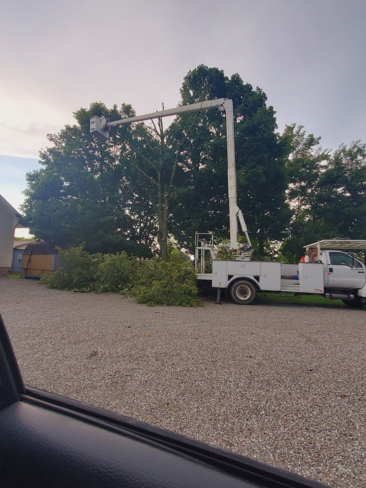
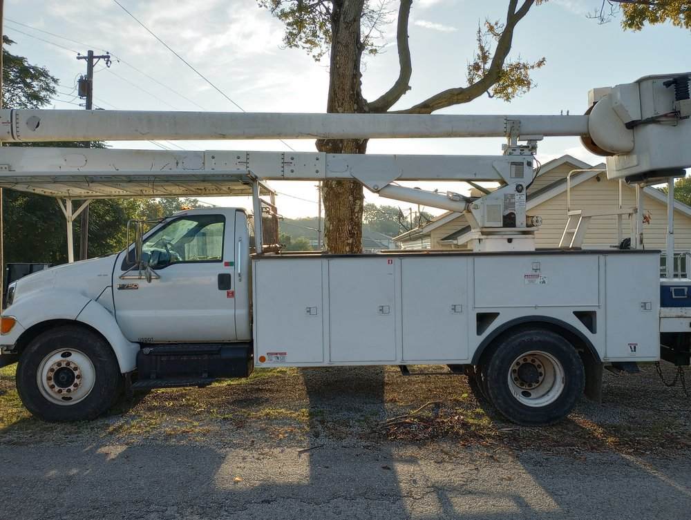
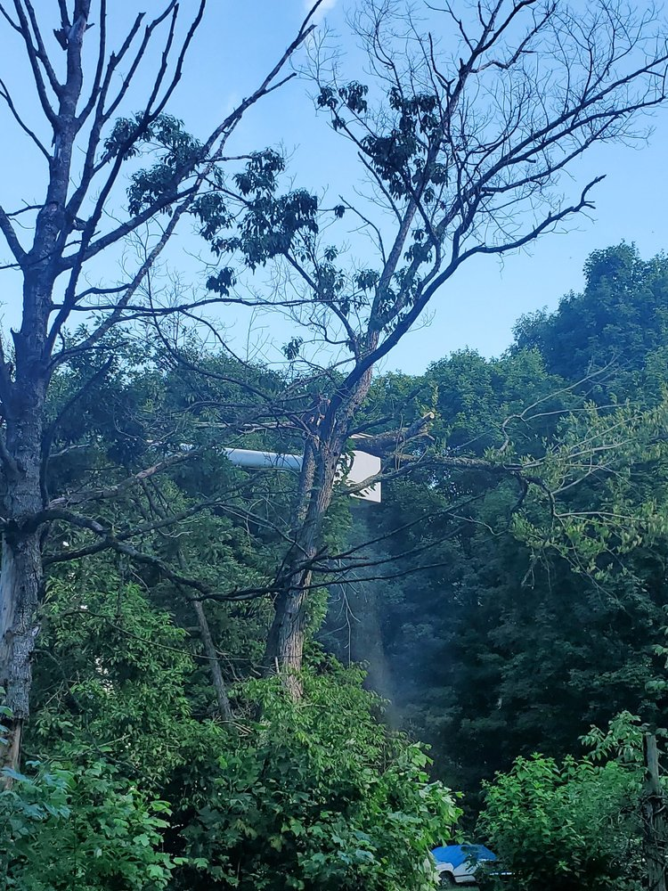

How to Tell If a Tree Is Sick: A Homeowner's Guide to Spotting Disease and Decay
Fungus on the bark, thinning leaves, dead limbs at the top — here's how to read the early warning signs before they become a real problem.
Read More →
Cracks, Cavities & Leaning Trunks: What These Tree Warning Signs Actually Mean
Not every flaw means a tree has to come down — but some do. Here's how to tell the difference before the next storm decides for you.
Read More →How Much Does Tree Removal Cost? A Complete 2025 Guide
Size, species, access, and location all affect the price. Here's exactly how tree removal is priced — and what to watch out for.
Read More →
7 Signs Your Tree Needs to Come Down Before It Falls on Its Own
Don't wait until a storm makes the decision for you. Here are the warning signs every homeowner should know.
Read More →
Stump Grinding vs. Stump Removal: What's the Difference and Which Do You Need?
Two different processes, two different results, two very different prices. Here's how to decide.
Read More →
When Is the Best Time to Trim Trees? A Seasonal Guide for Homeowners
The right time to prune depends on the species and what you're trying to achieve. Here's the seasonal breakdown.
Read More →